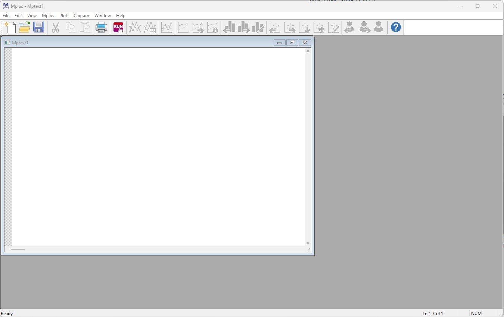
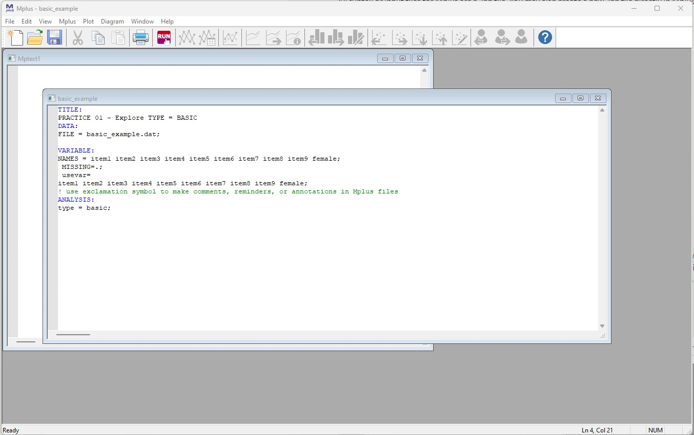
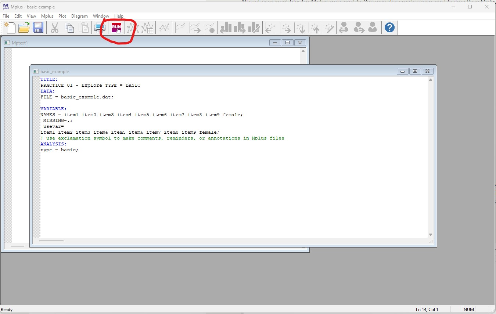
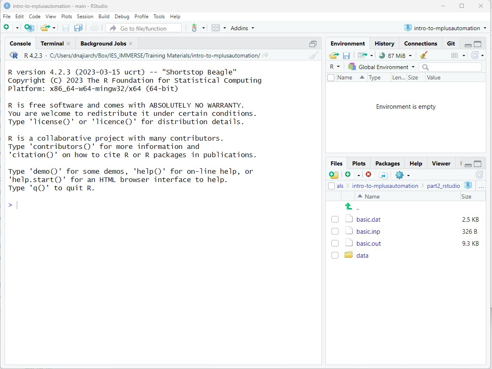
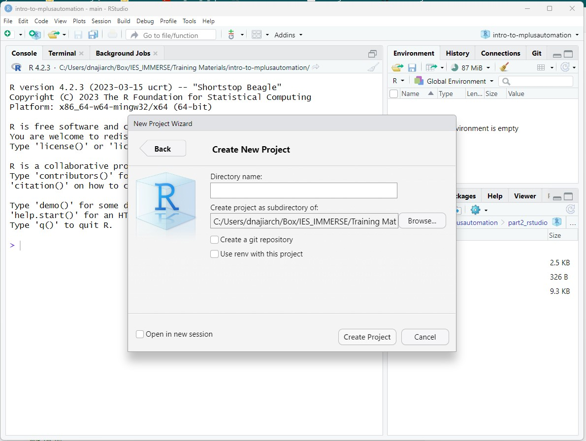
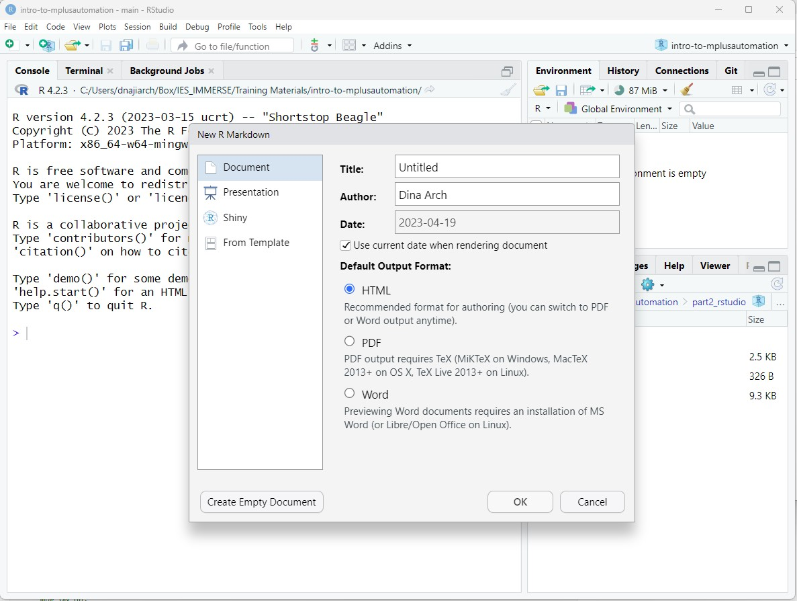

Introduction to Mplus and
MplusAutomation
Last Updated: 2026-03-26
Introduction to MplusAutomation
This introduction will go through how to use Mplus and MplusAutomation in R. For Part 1, we will first walk through how to run basic descriptive statistics using only Mplus. In Part 2, we will use an R package called MplusAutomation to run the same analysis as Part 1, only this time using only RStudio. Part 3 will go over data cleaning in R.
Additional MplusAutomation resources can be found here
PART 1: Introduction to Mplus
Step 1: Open Mplus

This is the Mplus interface. Even though we will NOT be working directly in Mplus, it is good to get an idea of how Mplus works.
Step 2: Open Mplus input file located in the project folder

Open the file titled basic_example.inp located in the
part1_mplus folder in Mplus. All syntax or input files for
Mplus are a .inp file. You may also create a new .inp
file directly in Mplus and populate the syntax there. For now, we can
use one that is already complete.
Basic skeleton of an Mplus .inp syntax
TITLE: title of our document
DATA: data file (must be in the same folder as the .inp)
VARIABLE:
NAMES = names of each variable in order of each column
MISSING = what the missing data is labeled as
USEVAR = names of the variable actually being used in the analysis
ANALYSIS:
- TYPE = this section is what will change constantly based on your model. For now, we are running “type = basic” which will provide us descriptive statistics of our variables.
NOTE: Please view the data file that is provided in this walkthrough (basic_example.dat). Mplus works with .dat files to run analyses. The dataset must also be formatted in certain way in order for Mplus to read it (i.e., no variable names). For more information on Mplus commands, see here.
Step 3: Click Run

This will run our “type=basic” analysis which will provide us a
.out file that contains variables descriptive statistics of our
variables. For information on the type=basic output, see here.
Mplus will save this .out file in the folder that dataset is
located (in our case part1_mplus. All .out and
.inp files can be open as a text file if you want to access
them off without Mplus.
PART 2: Introduction to MplusAutomation using R
In Part II, we will obtain the same Mplus .out file that we
produced in Part I using RStudio. This is done using the MplusAutomation
package (Hallquist & Wiley, 2018). MplusAutomation is
an R package communicates with Mplus to replicate the process we went
through above using Rstudio and R language.
WHAT is MplusAutomation & WHY should we use
it?
WHAT?
MplusAutomationis anRpackage- It “wraps around” the
Mplusprogram - Requires both
R&Mplussoftware - Requires learning some basics of 2 programming languages
- Car metaphor: R/Rstudio is the steering wheel or dashboard & Mplus is the engine
WHY?
MplusAutomationcan provide clearly organized work procedures in which every research decision can be documented in a single place- Increase reproducibility, organization, efficiency, and transparency
HOW?
- The interface for MplusAutomation is entirely within R-Studio. You do not need to open Mplus
- The code presented will be very repetitive by design
Step 1: Open RStudio

Open R studio on your desktop. You don’t need to close Mplus. IMPORTANT: Because we are using a package that communicates with Mplus, we must use have Mplus installed to run Rstudio.
Step 2: Create a new R-project

R-projects help us organize our folders , filepaths, and scripts. To create a new R project:
- File –> New Project…
Click “New Directory” –> New Project –> Name your project (Perhaps “pretraining-day2”)
Before you click “Create Project,” save your project. It’ll save as a folder. THIS IS IMPORTANT. If your file path is too long (longer than 90 characters), Mplus cuts off the filepath and will not run your syntax. Move all the materials found on Github into this new project folder you created.
Step 3: Create an R-markdown document

An R-markdown file provides an authoring framework for data science
that allows us to organize our reports using texts and code chunks. This
document you are reading was made using R-markdown! Lets create an
R-markdown and write script to run a “type=basic” analysis using the R
package, MplusAutomation.
To create an R-markdown:
- File –> New File –> R Markdown…
In the window that pops up, give the R-markdown a title such as “Introduction to MplusAutomation” Click “OK.” You should see a new markdown with some example text and code chunks. We want a clean document to start off with so delete everything from line 10 down. Go ahead and save this document.
Step 4: Load packages
Your first code chunk in any given markdown should be the packages you will be using. To insert a code chunk, etiher use the keyboard shortcut ctrl + alt + i or Code –> Insert Chunk or click the green box with the letter C on it. There are a few packages we want our markdown to read in:
library(MplusAutomation)
library(tidyverse) #collection of R packages designed for data science
library(here) #helps with filepaths
library(haven) # read_sav()
library(psych) # describe()
library(ggpubr) # ggdensity() and ggqqplot()
library(corrplot) # corrplot()
here::i_am("01-intro-to-mplusautomation.Rmd")As a reminder, if a function does not work and you receive an error
like this: could not find function "random_function"; or if
you try to load a package and you receive an error like this:
there is no package called `random_package` , then you will
need to install the package using
install.packages("random_package") in the console (the
bottom-left window in R studio). Once you have installed the package you
will never need to install it again, however you must
always load in the packages at the beginning of your R markdown
using library(random_package), as shown in this document.
Once it is installed, it doesn’t need to be installed again.
Step 5: Read in data set
Recall that our data set that we used earlier is a .dat file
with no variable names. Remember that this is a data set specifically
designed for Mplus. Let grab the original one (an SPSS file) in the
data folder within the part2_rstudio
folder.
data <- read_sav(here("part2_rstudio", "data", "explore_data.sav"))
# Ways to view data in R:
# 1. click on the data in your Global Environment (upper right pane) or use...
View(data)
# 2. summary() gives basic summary statistics & shows number of NA values
# *great for checking that data has been read in correctly*
summary(data)## item1 item2 item3 item4
## Min. : 1.000 Min. : 1.000 Min. : 1.000 Min. : 1.000
## 1st Qu.: 2.000 1st Qu.: 2.000 1st Qu.: 2.000 1st Qu.: 2.000
## Median : 4.000 Median : 5.000 Median : 5.000 Median : 5.000
## Mean : 4.508 Mean : 4.856 Mean : 4.706 Mean : 4.815
## 3rd Qu.: 6.000 3rd Qu.: 7.000 3rd Qu.: 7.000 3rd Qu.: 7.000
## Max. :10.000 Max. :10.000 Max. :10.000 Max. :10.000
## NA's :1
## item5 item6 item7 item8
## Min. : 1.000 Min. : 1.00 Min. : 1.000 Min. : 1.000
## 1st Qu.: 2.000 1st Qu.: 2.00 1st Qu.: 1.000 1st Qu.: 1.000
## Median : 3.000 Median : 5.00 Median : 3.000 Median : 3.000
## Mean : 4.169 Mean : 4.72 Mean : 3.689 Mean : 3.915
## 3rd Qu.: 6.000 3rd Qu.: 7.00 3rd Qu.: 5.000 3rd Qu.: 6.000
## Max. :25.000 Max. :10.00 Max. :10.000 Max. :10.000
## NA's :1 NA's :1 NA's :1
## item9 female
## Min. : 1.000 Min. :0.0000
## 1st Qu.: 4.000 1st Qu.:0.0000
## Median : 6.000 Median :1.0000
## Mean : 5.857 Mean :0.6807
## 3rd Qu.: 8.000 3rd Qu.:1.0000
## Max. :10.000 Max. :1.0000
## # 3. names() provides a list of column names. Very useful if you don't have them memorized!
names(data)## [1] "item1" "item2" "item3" "item4" "item5" "item6" "item7" "item8"
## [9] "item9" "female"## # A tibble: 6 × 10
## item1 item2 item3 item4 item5 item6 item7 item8 item9 female
## <dbl> <dbl> <dbl> <dbl> <dbl> <dbl> <dbl> <dbl> <dbl> <dbl+lbl>
## 1 2 1 1 1 1 1 1 1 1 1 [female]
## 2 2 2 1 1 1 2 1 1 1 1 [female]
## 3 3 2 3 3 1 2 1 1 1 1 [female]
## 4 1 2 1 1 1 4 1 1 1 0 [male]
## 5 2 1 1 3 1 1 2 1 1 1 [female]
## 6 3 1 2 1 3 2 2 2 1 1 [female]You can also look at the dataframe with labels and response scale meta-data:
| ID | Name | Label | Values | Value Labels |
|---|---|---|---|---|
| 1 | item1 | range: 1.0-10.0 | ||
| 2 | item2 | range: 1-10 | ||
| 3 | item3 | range: 1-10 | ||
| 4 | item4 | range: 1-10 | ||
| 5 | item5 | range: 1-25 | ||
| 6 | item6 | range: 1-10 | ||
| 7 | item7 | range: 1-10 | ||
| 8 | item8 | range: 1-10 | ||
| 9 | item9 | range: 1-10 | ||
| 10 | female | Student gender |
0 1 |
male female |
This SPSS dataset gives us more information than the .dat one. We are able to see the variable names, and descriptions.
Convert from .sav to .csv
It’s a good idea to convert .sav files to .csv. Here is how to convert the .sav to .csv:
# write_csv saves a .csv version of your dataset to your working directory.
# Enter the name of the object that contains your data set (in this case, "exp_data.csv"), then enter the name you want to save your dataset as. We can call it the same thing: "screen1.csv"
write_csv(data, here("part2_rstudio", "data", "exp_data.csv"))
# read the unlabeled data back into R
data_csv <- read_csv(here("part2_rstudio", "data", "exp_data.csv"))Optional: Convert from .csv to Mplus .dat file
Say you want an Mplus .dat file and don’t want to go through the
hassle of deleting rows and manual conversion to .dat. You can
use the prepareMplusData() function to convert from
.csv to .dat.
Step 6: Using MplusAutomation
To run a basic model using MplusAutomation we used the
mplusObject() function and the mplusModeler()
function.
What does the mplusObject()
function do?
1. It generates an Mplus input file (does not need full variable name list, its automated for you!) 2. It generates a datafile specific to each model 3. It runs or estimates the model (hopefully) producing the correct output. Always check!
What does the mplusModeler()
function do?
- Creates, runs, and reads Mplus models created using
mplusObject() - You can specify where you want the .out file saved
check=TRUEchecks for missing semicolons,run=TRUEruns the model,hashfilename=FALSEdoes not add a hash of the raw data to the datafile name.
m_basic <- mplusObject(
TITLE = "PRACTICE 01 - Explore TYPE = BASIC;",
VARIABLE =
"usevar= item1 item2 item3 item4 item5 item6 item7 item8 item9 female;",
ANALYSIS =
"type = basic; ",
usevariables = colnames(data_csv),
rdata = data_csv)
m_basic_fit <- mplusModeler(m_basic,
dataout=here("part2_rstudio", "basic.dat"),
modelout=here("part2_rstudio", "basic.inp"),
check=TRUE, run = TRUE, hashfilename = FALSE)NOTE: You don’t need to specify MISSING
here since it automatically detects the missing value from the data set.
You also don’t need NAMES as it detects the names from the
data set.
Optional: Subsetting observations
You can use Mplus syntax to explore descriptives for observations reported as “female.”
Add line of syntax: useobs = female == 1;
fem_basic <- mplusObject(
TITLE = "PRACTICE 02 - Explore female observations only;",
VARIABLE =
"usevar = item1 item2 item3 item4 item5 item6 item7 item8 item9;
useobs = female == 1; !include observations that report female in analysis",
ANALYSIS =
"type = basic;",
usevariables = colnames(data_csv),
rdata = data_csv)
fem_basic_fit <- mplusModeler(fem_basic,
dataout=here("part2_rstudio", "fem_basic.dat"),
modelout=here("part2_rstudio", "fem_basic.inp"),
check=TRUE, run = TRUE, hashfilename = FALSE)After running an MplusObject function, MplusAutomation
will generate an output file (same one we did before). ALWAYS check your
output before moving forward with your analyses. It’s easy to skip past
checking our output since MplusAutomation doesn’t automatically present
it to us after running the code. It’s good practice to make it a habit
to check your output file after every run.
References
Hallquist, M. N. & Wiley, J. F. (2018). MplusAutomation: An R Package for Facilitating Large-Scale Latent Variable Analyses in Mplus. Structural Equation Modeling, 25, 621-638. doi: 10.1080/10705511.2017.1402334.
Muthén, L.K. and Muthén, B.O. (1998-2017). Mplus User’s Guide. Eighth Edition. Los Angeles, CA: Muthén & Muthén
R Core Team (2017). R: A language and environment for statistical computing. R Foundation for Statistical Computing, Vienna, Austria. URL http://www.R-project.org/
Wickham et al., (2019). Welcome to the tidyverse. Journal of Open Source Software, 4(43), 1686, https://doi.org/10.21105/joss.01686